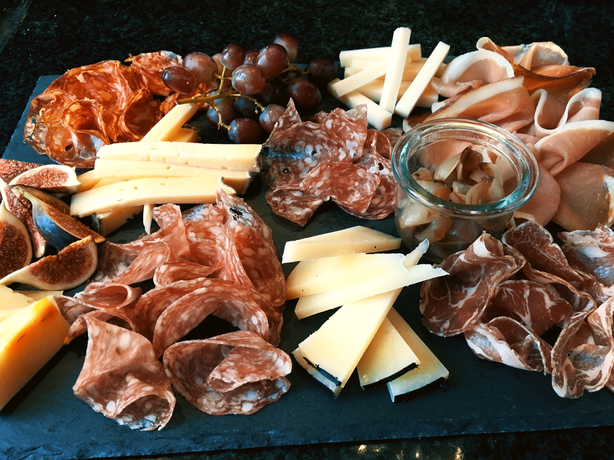

Står du og skal have gæster til reception, fødselsdag, barnedåb, studentergilde eller
hvad som helst andet måske bare en ganske
almindelig hverdag, men ikke selv har tid eller lyst til at lave
maden. Så bestil hos os, vi hjælper gerne med forskelligt til en vaske
ægte italiensk aften.
Vil du være sikker på at få maden fra os, så bestil i god tid. Vi kan være nødt til at lukke for bestilling i travle
perioder da vi meget nødigt vil gå på kompromis med kvaliteten.
Vi er fleksibele og kreative og indgår altid gerne i dialog om netop
jeres arrangement. Så er du i tvivl eller har du brug for hjælp til at sammensætte en menu så er du velkommen
til at kontakte os enten på mail post@italianissimo.dk eller telefon 86 13 02 52 – eller bare stoppe forbi butikken.
Vi glæder os til at høre fra dig.
HUSK.....Til daglig laver vi sandwich, kaffe og Affetati misti (Tapas) som alt sammen kan nydes i forretningen
eller tages med.
